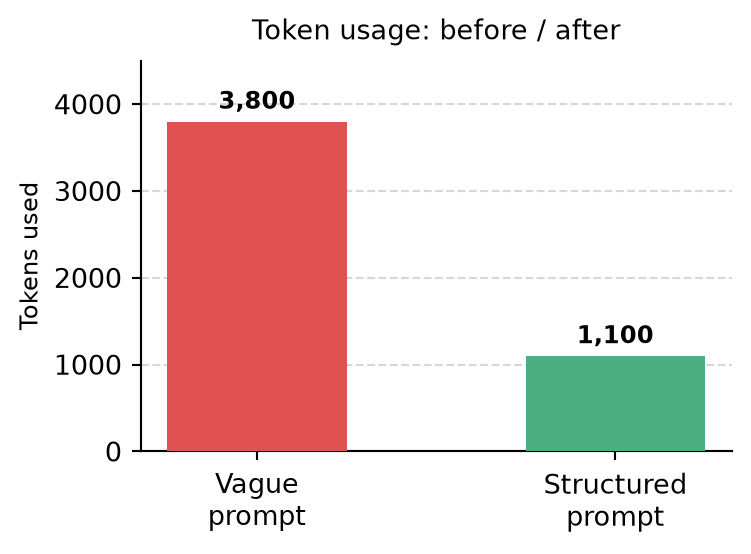

AI Tools for Research
A PhD student’s RETEX after two years with AI agents
2026-06-18
Why I kept using them
Too many papers
Find and compare faster
Implementation friction
Prototype and debug faster

A useful assistant?
Only with human judgement
An honest promise

An AI agent is like a very fast junior collaborator:
- endless energy,
- no embarrassment about trying,
- uneven reliability.
Useful for execution and exploration. Scientific originality and judgement remain my responsibility.
A language model is not an oracle
\[P(\text{token}_t \mid \text{tokens}_{<t})\]
It produces plausible continuations.
Useful? Very often.
True by default? No.

Hallucination and evaluation discussion: OpenAI (2025).
From chat to AI agent
Chat

Question -> response
Agent

Goal -> tools -> actions -> results
Command review: keeping control
Example CLI commands
| Command | Use |
|---|---|
/init |
create project guidance |
/clear |
new independent topic |
/compact |
summarize context |
/rewind |
undo a bad direction |
/help |
discover commands |

Command examples originate from my Claude CLI notes; exact commands vary by tool.
Context is a limited resource
Context window
An agent sees only the material provided or retrieved in the current working context.
Do not make it re-read the entire project for every question.

Choose effort for the task

Search and formatting do not require the same reasoning budget as architecture or numerical diagnosis.
Project memory
Persistent context
AGENTS.md / CLAUDE.md
build, test, conventions
MATH.md
equations and assumptions
SKILL.md
reusable Julia workflow

Files are versioned memory. Tests are executable memory.
{kind=link}
{kind=link}